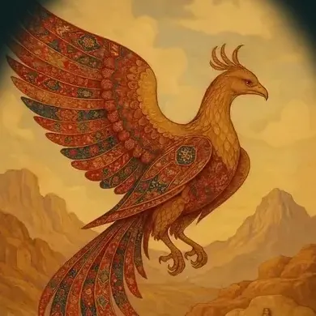

ارزاق
اسمش رو گذاشتیم کار خیر: بستههای ارزاق برای خانوادههای نیازمند. روی جعبهها نوشته بودن «خدایا شکرت».

ما کی هستیم


گروهدرمانی

چون نگه کردند آن سی مرغ زودبیشک این سی مرغ آن سیمرغ بود
عطار، منطقالطیر
سی تا مرغ راه افتادن که سیمرغ رو پیدا کنن. آخر راه فهمیدن سیمرغ خودشونن.
بیرون از اتاق
با هم دست به کار هم میشیم. آدم تو کار، خودش رو تو آینه بیشتر میبینه؛ هم خودش رشد میکنه، هم جمعش.
اسمش رو گذاشتیم کار خیر: بستههای ارزاق برای خانوادههای نیازمند. روی جعبهها نوشته بودن «خدایا شکرت».

برای آزادیِ آدمهایی که ناخواسته یا بیتقصیر زندانی شده بودن. فاز اولش تموم شده: پنج نفر آزاد شدن و از خانوادههاشون حمایت شد.

یه پاکسازی طبیعت، با هم؛ و دپارتمان هنر نگاخته ازش یه کلیپ ساخته.
لینک کلیپ
اینا فقط چند تا از کارهاییه که تا حالا با هم کردیم.
کنار گروهدرمانی
هفت تا آزمون بر پایهی چارچوبهای شناختهشدهی روانشناسی. بدون ثبتنام؛ جوابهات فقط تو مرورگر خودت میمونه. اینا ابزار خودشناسیان، نه تشخیص.

آدمها
نام، مدرک و رشته، شمارهی پروانه، سابقهی کار با گروه، و دو خط به زبون خودش. یه عکس ساده هم بذارید؛ تو این صفحه از هر تصویر دیگهای بیشتر کار میکنه.
اگه گروهها رو بیشتر از یه نفر میگردونن، همین قالب برای هر کدوم تکرار میشه.
تماس
شمارهی واتساپ یا تلگرام، ایمیل، و شهر و محلهی جایی که گروهها برگزار میشن. تا شمارهای که واقعاً جواب میده رو نگیرم، اینجا چیزی نمیذارم.